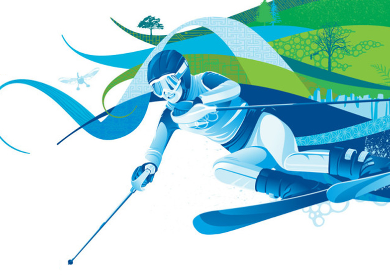
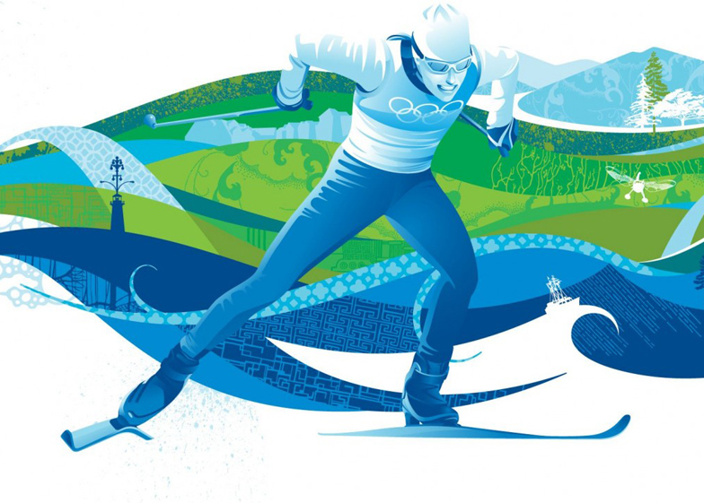
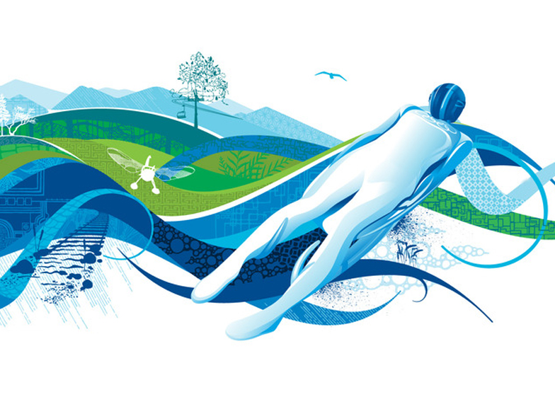
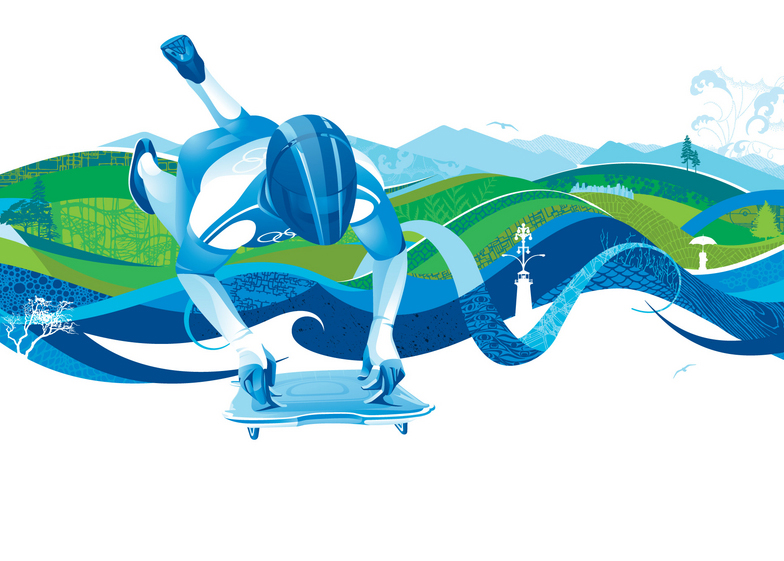
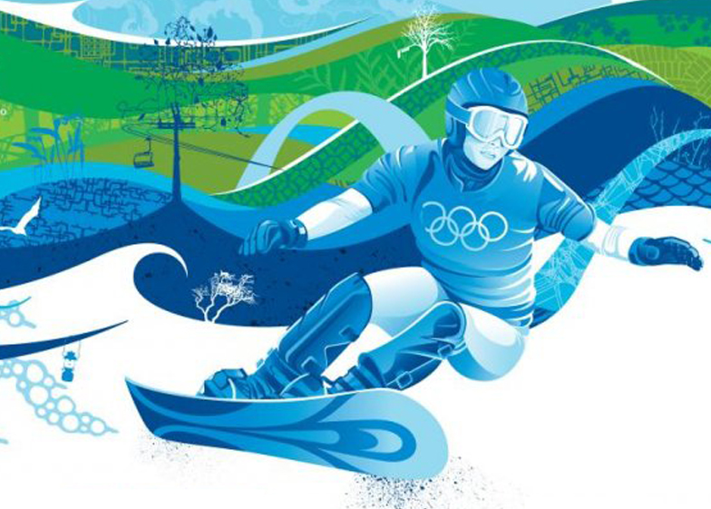
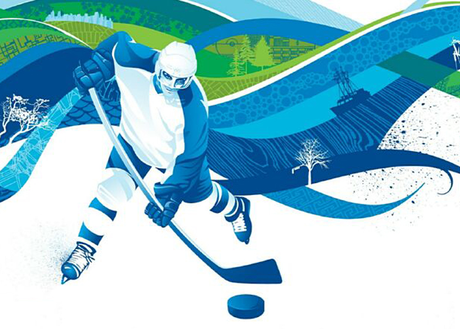

|
Биатлон
Биатлон впервые был включен в зимнюю программу Олимпийских игр
в 1960 году
Вне всяких сомнений биатлон – один из самых зрелищных видов спорта, входящих в программу Олимпийских игр. Биатлонист должен совмещать в себе качества лыжного гонщика и стрелка – в этом и есть основная специфика. Не зря дословный перевод слова «биатлон» с латинского будет звучать как «двойная борьба» – состязание скорости и меткости.
Корни этого вида спорта уходят во времена глубокой древности. Охота на лыжах являлась частью быта многих северных народов. Однако рассматривать биатлон как некое спортивное действо стали только с конца XVIII века, когда на шведско-норвежской границе были проведены соревнования, отдаленно напоминавшие современный вариант состязаний.
|
 |
Бобслей
Боб - продолговатые сани обтекаемой формы на длинных полозьях.
Перед каждым стартом полозья боба проверяются на отсутствие специальных смазок. Поскольку бобы бывают как двухместные, так и четырехместные, их длина и вес существенно различаются. Также существуют ограничения по суммарному весу, которые способны выдержать такие сани. В двойках это 200 кг, а в четверках – 400 кг. Иногда боб сравнивают с «космическим шаттлом» - что не является такой уж фантастикой. При конструкции бобов последнего поколения используются технологии, применяемые в космической авиации.
|
|  |
Горнолыжный спорт
Один из самых опасных видов спорта, включенных в программу зимней олимпиады. По сути, является скоростным спуском на лыжах с горы. Тем не менее, горнолыжный спорт – собирательное понятие, включающее в себя несколько олимпийских дисциплин.
Скоростной спуск. Название дисциплины соответствует сути. С горы, перепад высот которой должен составлять до 800 м для женщин и 1100 м для мужчин, происходит спуск на высокой скорости, которая на отдельных участках трассы составляет около 150 км/ч.
|
 |
Керлинг
Керлинг – из тех видов спорта, где не требуются какие-то выдающиеся физические способности, выносливость и все то, чтобы обычно ассоциируется со спортом.
Скорее, керлинг – соревнования интеллектуальные.
Интересный факт
Вес камня, зафиксированный в международных правилах, — 19 килограммов 960 граммов.
Спустя несколько сотен лет керлинг существенно расширил свою географию и стал популярен практически по всему миру. Неудивительно, что с 1998 года его официально включили в программу Олимпийских игр. И, разумеется, Олимпиада в Сочи не обойдется без соревнований по керлингу. Что тут еще сказать… Спасибо шотландцам!
|
 |
Конькобежный спорт
Советские конькобежцы впервые появились на зимней Олимпиаде в 1956 году и сходу завоевали семь медалей разного достоинства. А всего восемь лет спустя на Олимпиаде в Инсбруке был установлен рекорд, который держится до сих пор и который является, пожалуй, главным достижением отечественного конькобежного спорта: Лидия Скобликова стала победительницей на всех четырех дистанциях и, таким образом, оказалась единственной в мире 6-кратной олимпийской чемпионкой в истории.
|
|  |
Лыжные гонки
Наскальные рисунки в Скандинавии и России рассказывают нам о том, что за много тысяч лет до нашей эры народы, живущие там, использовали лыжи для передвижений по снегу. Поэтому любовь к занятиям лыжными гонками у жителей северных стран, к коим мы с вами тоже частично относимся, заложена на генетическом уровне. В Скандинавском, например, люди даже поклонялись покровителям лыж – богу Улльру и богине Скаде.
Первые состязания в беге на скорость состоялись в далеком 1767 году в Норвегии. Но активное распространение лыжные гонки как вид спорта получили на рубеже XIX-XX веков, когда повсеместно стали создаваться лыжные клубы и национальные федерации во многих странах. Впервые соревнования по лыжным гонкам среди мужчин были представлены уже на I зимних Олимпийских играх во французском Шамони, а среди женщин – лишь в 1952 году в Осло (Норвегия).
|
 |
Прыжки на лыжах с трамплина
Одновременно простой, зрелищный и опасный спорт, входящий в программу зимних Олимпийских игр.
Придуман теми и посвящен тем, кто всегда мечтал парить в небе, как птица.
Выполнение технических элементов оценивается пятью судьями. Они смотрят на качество момента прыжка со стола отрыва, технику полётной фазы и приземление. В фазе полёта прыгун должен развести ноги таким образом, чтобы лыжи образовали латинскую букву V. Это делается для усложнения самого полета, а также для улучшения аэродинамики. В фазе приземления ноги спортсмена должны принять специальное положение, называемое «разножкой» или «телемарком». При этом положении одна из ног выставлена вперёд, а другая отведена назад; обе ноги согнуты в коленях; колено «задней» ноги опущено вниз; руки расставлены выше плеч. Лыжи во время приземления параллельны и максимально сближены. Выполнение «телемарка» оценивается судьями особенно строго и чаще всего спортсмены не добирают необходимого количества баллов из-за некачественного исполнения этого технического элемента.
Помимо баллов за технику, спортсмен получает дополнительные очки за дальность прыжка. Каждый трамплин в зависимости от размеров имеет свою критическую точку приземления именуемой К-поинтом. |
Победитель выявляется согласно сумме баллов всех четырех участников команды.
|  |
Санный спорт
Одним из самых быстрых и загадочных для публики видов спорта, который будет представлен в программе зимних Олимпийских игр в Сочи, можно считать санный спорт.
Этот вид состязаний представляет из себя спуск на одноместных или двухместных санях по заранее подготовленной трассе.
Дебютным годом санного спорта на зимних Олимпийских играх считается 1964 (Инсбрук, Австрия). Включение этого вида спорта в олимпийскую программу омрачило ужасное известие – незадолго до начала соревнований во время тренировки с трассы вылетел и разбился насмерть англичанин польского происхождения Казимеж Кей-Скжипески. В связи с этим предпринимались попытки запретить саночникам и бобслеистам выступать в Инсбруке на новой искусственной трассе, но всё было тщетно. Первую олимпийскую медаль увез домой Томас Келлер из объединенной команды Германии.
Россияне присоединились к международному санному движению в 1972 году на XI Олимпийских зимних играх в Саппоро. Единственную золотую медаль в копилку сборной России принесла Вера Зозуля на играх в Лейк-Плесиде в 1980 году за всю историю выступлений наших спортсменов.
|
|  |
Скелетон
Соревнования по скелетону впервые были представлены на II зимних Олимпийских играх, проводивших в Санкт-Морице в 1928 году. Первым олимпийским чемпионом в этом виде спорта стал американец Дженнинсон Хитон. Серебряную медаль завоевал младший брат победителя - Джон Хитон, а бронзовую - Дэвид Эрл оф Нортеск из Великобритании. С 1982 года начали проводить чемпионаты мира по данному виду спорта.
А что же происходит со скелетоном в нашей стране? Российские спортсмены впервые приняли участие в соревнованиях по скелетону в 1994 году на этапах Кубка мира в Инсбруке и Санкт-Морице - С. Сафронов (Москва) и П. Герасимов (Москва), а также на чемпионате мира в Альтенберге. В 2010 году на Олимпиаде в Ванкувере Александр Третьяков завоевал бронзовую медаль и стал первым призером на подобных соревнованиях среди наших соотечественников. Спустя три года Александр принес нашей стране и первое «золото» чемпионатов мира в этом виде спорта, выиграв соревнования в Санкт-Морице.
Так что же это за диковинный вид спорта такой – скелетон? Он представляет собой сани c утяжеленной рамой без руля, на которых спортсмен лежит головой вперёд по направлению движения лицом вниз. Для управления используются специальные шипы на ботинках. Снизу к скелетону крепятся два стальных конька, а сверху - две ручки. Расположенные спереди и сзади скелетона бамперы играют роль глушителей и защищают спортсмена от ударов о стену ледового желоба.
|
|  |
Сноуборд
Что такое сноуборд?
Это не только «снежная доска», о которой вы сразу подумали. Сноуборд – это олимпийский вид спорта, который заключается в спуске с заснеженных склонов и гор на специальном снаряде.
Впервые сноубординг был представлен на зимних Олимпийских играх в Нагано в 1998 году.
Это молодой и активно развивающийся вид спорта. Сноубордисты не привыкли ограничивать себя какими-либо рамками и провозгласили абсолютную свободу катания на доске. Но свобода остается на массовом уровне, любое соревнование проводится по определенным правилам. Так, выделилось множество разновидностей сноубординга, некоторые уже вошли в программу Олимпийских игр, другие – постепенно вливаются или стоят на пороге включения.
Сноубординг относится к экстремальным видам спорта, поэтому он тесно связан с риском для здоровья. Причем травматизм при катании на сноуборде в два-три раза выше, чем при занятиях горнолыжным спортом. Будем надеяться, что новые виды, включенные в программу соревнований в Сочи, внесут еще большее разнообразие в турнир сноубордистов, и трибуны будут полностью заполнены зрителями, восторгающимися происходящим действом на российских склонах.
|
 |
Фигурное катание
Самым музыкальным, ярким и артистичным видом спорта, который будет представлен в программе зимних Олимпийских игр в Сочи, по праву можно считать фигурное катание на коньках.
Во всем мире фигурное катание считают не просто спортом, а высшей степенью искусства.
Отрадно и то, что российские спортсмены внесли огромный вклад в развитие и становление этого вида спорта. История фигурного катания знает всего трех трехкратных олимпийских чемпионов: швед Гиллис Графстрем и Соня Хени из Норвегии в одиночном катании и россиянка Ирина Роднина в парном.
Фигурное катание на коньках в Россию привез из Европы Петр I, самостоятельно придумавший новый способ крепления коньков к сапогам. В 1865 году на Садовой улице в Юсуповском саду был открыт первый в истории России общественный каток. Фигурное катание подарило России первого олимпийского чемпиона – им стал Николай Панин-Коломенкин, выигравший золото на Играх IV Олимпиады в 1908 году в Лондоне в соревновательной программе, которая называлась «специальные фигуры».
В настоящее время на Олимпийских играх спортсмены состязаются в индивидуальных зачетах среди мужчин и женщин, в парном катании и танцах на льду.
Впервые в программу зимних Олимпийских игр включили командное первенство среди фигуристов. От каждой страны должно быть представлено по два мужчины и по две женщины в одиночном катании и по одной паре в парном катании и в танцах на льду. Итоговые результаты суммируются, страна-победитель определяется по большей сумме баллов.
|
 |
Фристайл
Понятие «фристайл» у современной молодежи ассоциируется скорее с неким танцевальным направлением, нежели с Олимпийскими играми.
Настоящие ценители зимних видов спорта, конечно же, знают, что фристайл – необычайно интересный, красивый и захватывающий дух вид лыжного спорта.
Что же из себя представляет этот загадочный фристайл? В данном виде спорта существует несколько разновидностей. Это – лыжная акробатика, могул, ски-кросс и слоупстайл. Интересно, что до 1999 года в программу официальных соревнований по фристайлу входила и такая близкая каждому россиянину дисциплина как балет. Да-да, не удивляйтесь – лыжный балет являлся частью фристайла.
Конечно, «Лебединое озеро» на лыжах станцевать довольно проблематично, однако, суть балета состояла в том, что участник спускается по пологому склону под музыкальное сопровождение с выполнением различных элементов фристайла: шаги, скольжения, прыжки, вращения и т.д. Увы, данная дисциплина не смогла хорошо зарекомендовать себя как на уровне международной федерации, так и на уровне простых болельщиков, а потому соревнования по лыжному балету больше не проводятся. Как знать, быть может через какое-то время все еще поменяется.
|
|  |
Хоккей
Сражения мастеров клюшки и шайбы исторически привлекали к экранам и радиоприёмникам миллионы болельщиков по всему миру, а по популярности этот вид спорта вполне сопоставим с футболом. В России уж точно. И если среди наших читателей остались люди, которые не знают, что такое хоккей, следующие несколько абзацев специально для вас.
На залитой льдом площадке 58 x 30 метров с закруглёнными бортами бьются две команды. В пределах коробки одновременно могут находиться те самые «великолепные пятерки и вратарь». Игроки каждой из команд делятся на разные амплуа. Защитники, форварды и вратари. Как правило, на площадке обычно находится вратарь, два защитника и три форварда. Отклонения от правила численного состава происходит в том случае, если та или иная команда оказалась в меньшинстве.
Хоккейный олимпийский турнир делится на групповую стадию и стадию плей-офф. Во время первой стадии 12 команд-участниц делятся на 3 группы по 4 команды. В каждой группе команды по разу играют друг с другом. За победу в основное время команда получает 3 очка, за победу в овертайме или по буллитам — 2 очка, за поражение в овертайме или по буллитам — 1 очко, за поражение в основное время — 0 очков. По итогам выступления сборных в групповом этапе, лучшие попадают в стадию плей-офф, которая, по сути, является стадией матчей на вылет. Олимпийским чемпионом становится та сборная, которая успешно преодолеет все стадии плей-офф и выиграет в финале. Главными фаворитами на победу на ближайшей Олимпиаде станут сборные Канады, США, России, Швеции и Финляндии.
|
 |
Шорт-трек
Зима – время льда. Редко, кто откажет себе в удовольствии морозным зимним вечером выбраться на каток и прокатиться несколько кругов по льду.
Многие знают, что бег на коньках – один из самых популярных видов спорта. А еще есть один его подвид, который менее популярен, но им, по сути, занимаются все те, кто приходит на каток – пусть даже они об этом и не подозревают. Речь о шорт-треке.
Конечно, суть его заключается совсем не в неспешном катании по кругу. Это крайне динамичный и быстрый вид спорта. Его участники порой развивают внушительные скорости ради победы.
По большому счету, шорт-трек – те же гонки на коньках, но на меньшей площади. Как правило, соревнования проходят на обычном хоккейном стадионе. Несмотря на то, что стандартная длина окружности трассы составляет 111,12 метров, спортсмены совершают забеги на гораздо более длинные дистанции: от 333 до 3000 метров. А когда проходят соревнования в мужской эстафете, то бегунам нужно осилить в общей сложности 5000 метров.
Поступательно развиваясь и приобретая популярность по всему миру, шорт-трек переживал расцвет во второй половине ХХ века. В 1981 году состоялся первый чемпионат мира по данному виду спорта. Европейского первенства в этом виде спорта, правда, пришлось ждать еще 16 лет.
За несколько десятков лет шорт-трек приобрел такую популярность, что в 1988 году был показательным видом спорта на Олимпиаде в Калгари. Оставался лишь один шаг, и он был сделан в 1992 году. В тот год шорт-трек официально был признан олимпийским видом спорта. С тех пор программа по шорт-треку является обязательной на каждой зимней Олимпиаде.
Нельзя сказать, что Россия является мировым лидером по шорт-треку. У нас в стране с достаточно холодными зимами он, как ни странно, не очень популярен. Тем не менее, в России он появился с 1985 года, когда наша команда принимала участие в Универсиаде в итальянском Беллуно. А спустя три года состоялся и первый чемпионат СССР. С тех пор прошло много времени, теперь лидеры мирового шорт-трека выйдут на сочинский лед для того, чтобы поспорить за звание олимпийского чемпиона. Верим в наших!
|